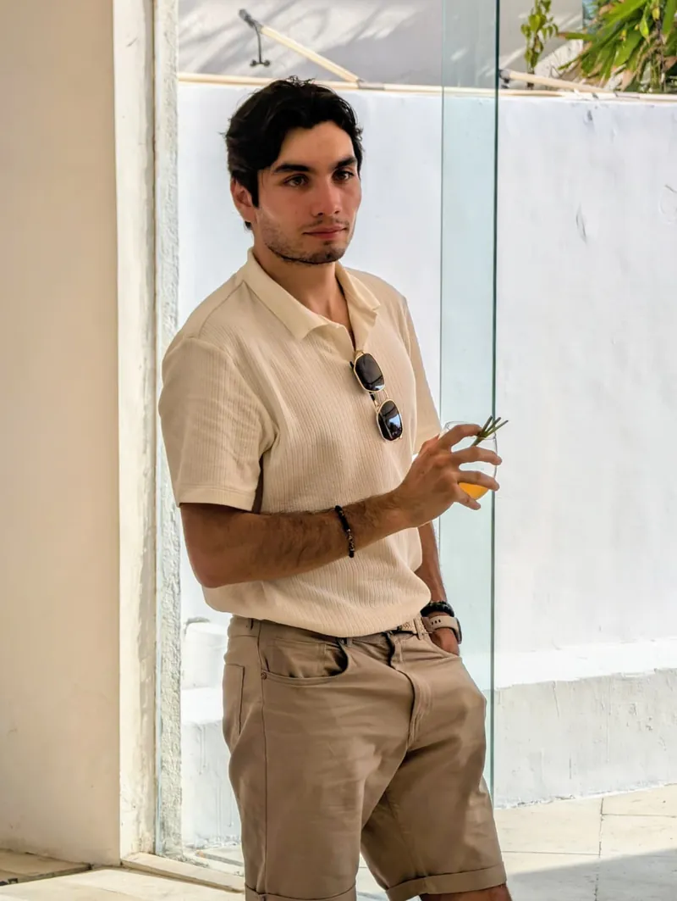
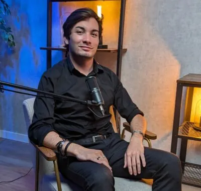

La publicité en ligne ne suffit plus.
Reste ceux qui racontent leur histoire.
VISION 2026 FOCUS
READY FOR IMPACT
Ils nous font confiance
Deux frères. Deux regards.
Une même conviction.
Faux jumeaux, vrais associés, nous sommes Alexandre et William, fondateurs de Kingdom Ads. Onze ans d'expérience dans la publicité en ligne, dont neuf à scénariser des publicités vidéo qui convertissent réellement, à piloter des budgets Meta Ads et à transformer des marques en machines d'acquisition prévisibles.
Notre conviction : la publicité en ligne est devenue plate parce que tout le monde optimise la même plateforme avec les mêmes leviers. Restent ceux qui filment des histoires — qui prennent le temps d'écrire l'angle avant de lancer la campagne.
Deux cerveaux pour chaque projet client. Toujours.


LA MESURE DU RÉSULTAT
Le problème n'est pas le canal.
C'est que vous ne savez pas quoi raconter.
Réseaux sociaux
Une présence fantôme. Des posts sans aucune réaction, ni engagement, ni conversion.
Une réponse sur 100 prospections. Un bruit de fond qui n'atteint jamais sa cible.
Mailing
Direction la corbeille. Vos séquences sont perçues comme du spam pur et simple.
Studio vidéo
Vous avez le matériel, mais pas l'histoire. Une belle image vide de sens.
DISTINCTION STRATÉGIQUE
"Une agence vidéo n'est pas une agence de publicité."
STUDIO VIDÉO CLASSIQUE
- Focus sur l'esthétique pure
- Absence de pilotage Ads
- Pas de back-office technique
- KPIs ignorés ou non mesurés
NOTRE ARCHITECTURE
- Scénarisation basée sur la donnée
- Pilotage quotidien des budgets
- Tracking & Attribution précise
- Optimisation continue (Creative Testing)
« Une machine d'acquisition complète — du scénario au scaling, pilotée par la donnée. »
CONSTRUIRE AVEC NOUS10 // 16 — Méthode
Anatomie
d'une
scène
Nos publicités sont des mini-court-métrages. Nous ne vendons pas des produits — nous résolvons des conflits par la narration.
L'angle pèse 80% du résultat01 — La scène
Une
scène
L'immersion immédiate dans un contexte familier ou intriguant.
02 — Le narrateur
Un
narrateur
Une incarnation forte qui porte la voix de la marque.
03 — Le conflit
Un
conflit
Le point de friction qui empêche votre client de dormir.
04 — La résolution
Résolution
Votre solution comme seule issue logique et satisfaisante.
6 Angles Signature à tester
Chaque marque a besoin de plusieurs angles narratifs pour ne pas saturer son audience. Voici les six structures que nous testons systématiquement sur Meta Ads pour identifier celle qui filme votre histoire le plus fidèlement et qui transforme une publicité plate en machine d'acquisition.
Le Fondateur
L'histoire brute du "Pourquoi" derrière la création de l'entreprise.
Le Client Transformé
L'arc narratif complet de la douleur à la délivrance totale.
L'Observateur
Un regard extérieur, analytique et détaché sur votre marché.
L'Antagoniste
Dénoncer le statu quo et les pratiques obsolètes de votre industrie.
Le Témoignage à rebours
Commencer par le succès final et remonter jusqu'à la cause.
Le Manifeste
Affirmer vos valeurs radicales pour attirer ceux qui vous ressemblent.
Le processus architectural
Cinq étapes, de l'audit au scaling. Chaque jalon est instrumenté : nous mesurons, ajustons, itérons. Aucun projet ne quitte l'atelier sans tableau de bord, sans plan de test créatif, sans architecture d'attribution claire.
Audit
ANALYSE DATA & ASSETS
Écriture
SCÉNARISATION STRATÉGIQUE
Tournage
CAPTATION HAUTE PRÉCISION
Diffusion
ALGORITHME & SCALING
Optimisation
ITÉRATION & RÉSULTATS
VOTRE ARCHITECTURE D'ACQUISITION COMMENCE ICI.
Trente minutes d'échange pour cadrer votre contexte, identifier vos angles dormants et estimer le potentiel de votre prochain trimestre publicitaire. Sans engagement, sans deck préfabriqué — juste une conversation honnête sur ce qui pourrait débloquer votre acquisition.
FOUNDER // STRATEGY
alexandre@kingdomads.frFOUNDER // CREATIVE
william@kingdomads.fr